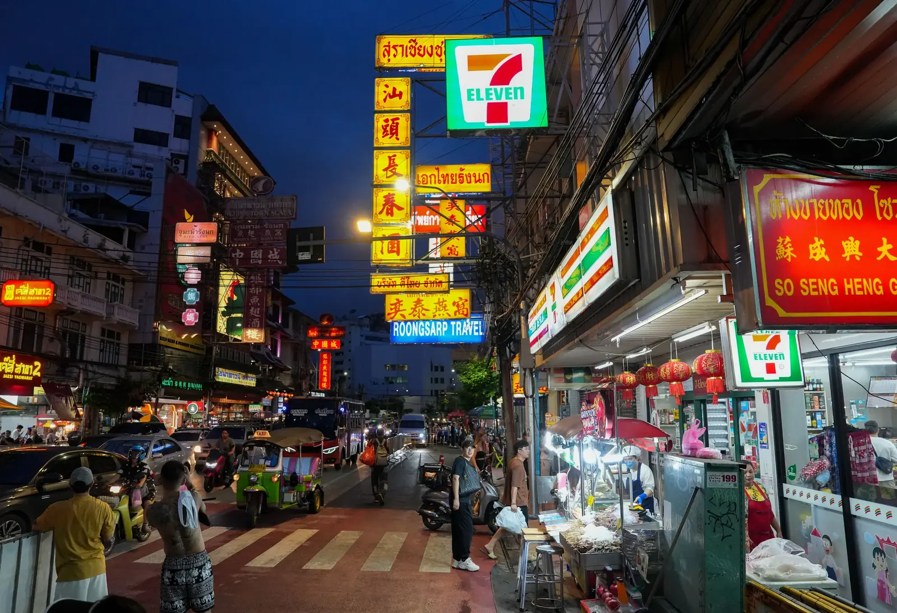
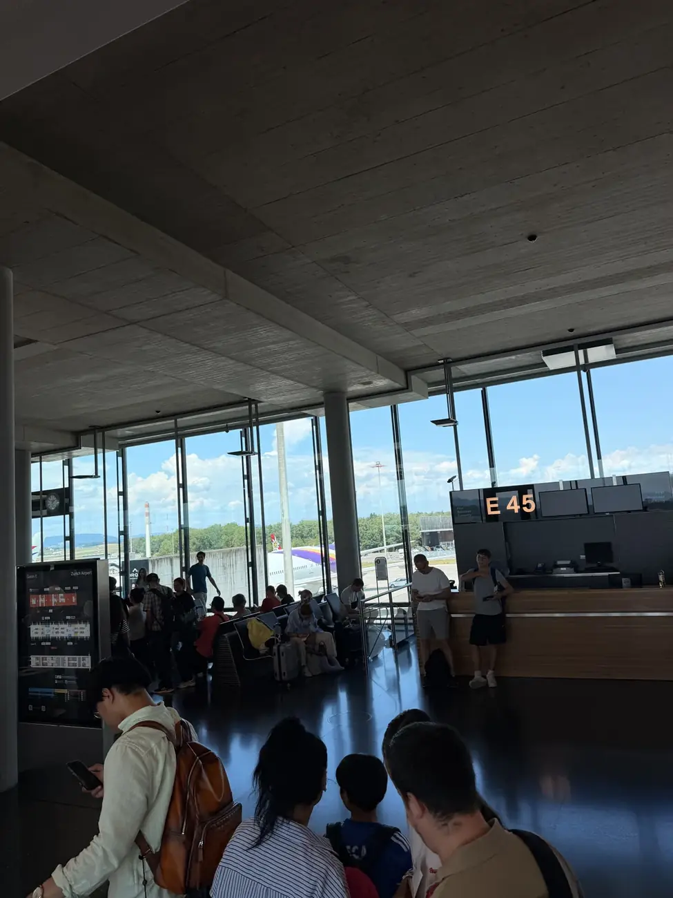
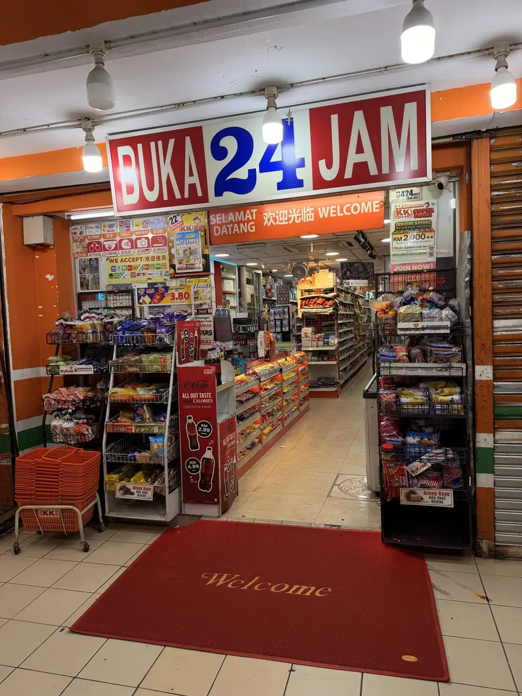

Online ankommen.
eSIM, lokale SIM oder Roaming? So findest du unterwegs eine Verbindung, die zu deiner Reise passt.
Die Frage nach Internet klingt vor der Reise nach einem Detail. Nach der Landung ist sie plötzlich ziemlich wichtig: Wo fährt der Bus? Wie heisst die Unterkunft? Und warum lädt die Taxi-App gerade nicht? Eine eSIM löst das schon vor dem Abflug. Eine physische SIM bekommst du am Flughafen oder später in der Stadt. Welche Wahl sich lohnt, hängt davon ab, wie lange du bleibst und wie viel Daten du brauchst.
Wir würden zuerst an die Ankunft denken. Brauchst du gleich Daten für Karte und Taxi-App, kannst du Saily vorab einrichten oder am Flughafen eine physische Touristen-SIM kaufen. Bleibst du länger im Land, schau dir die lokalen Tarife an. Und falls dein Heimattarif bereits günstiges Roaming enthält, rechne ihn ruhig mit – entscheidend ist dein konkreter Vertrag.
| Option | Gut für | Darauf achten |
|---|---|---|
| Reise-eSIM | Kurze Aufenthalte, erste Tage und Länderwechsel | Gerätekompatibilität, Datenmenge, Gültigkeit, abgedeckte Netze |
| Touristen-SIM | Sofort online, wenn du ein Geschäft am Flughafen findest | Öffnungszeiten, Wartezeit und Gesamtpreis |
| Lokale SIM oder eSIM | Längere Aufenthalte und viel Datenverbrauch | Passregistrierung, Öffnungszeiten, Netzabdeckung, Aufladen |
| Roaming | Bequemlichkeit bei passendem Vertrag | Preis pro Land, Datenlimite und mögliche Zusatzkosten |
Unsere einfache Regel: Die erste Fahrt vom Flughafen sollte auch ohne funktionierendes Flughafen-WLAN klappen. Für längere Aufenthalte vergleichen wir danach die lokalen Angebote. Wenn dein Telefon Dual-SIM unterstützt, kannst du Heimatnummer und Reise-SIM parallel verwalten.

Eine eSIM steckt bereits als Chip in einem kompatiblen Telefon; du lädst nur noch das passende Mobilfunkprofil. Bei Saily kaufst und installierst du den Tarif über die App. Die normalen Datenpakete enthalten keine lokale Telefonnummer für klassische Anrufe oder SMS. WhatsApp läuft trotzdem mit deiner bisherigen Nummer weiter. Wenn du deine Schweizer SIM für Anrufe oder Bestätigungscodes aktiv lässt, gelten dafür die Konditionen deines Heimattarifs.
Vor dem Kauf diese fünf Punkte prüfen
- Funktioniert eSIM auf deinem Gerät? Prüfe die Einstellungen oder die offizielle Kompatibilitätsliste des Anbieters. Auch ein SIM-Lock kann stören.
- Welche Länder sind enthalten? Ein Regionaltarif lohnt sich nur, wenn deine tatsächlichen Stopps abgedeckt sind.
- Wann beginnt die Laufzeit? Bei Saily soll das Datenpaket nach der Ankunft automatisch starten, wenn die eSIM vorab installiert wurde. Installation und Aktivierung müssen innerhalb von 30 Tagen nach dem Kauf erfolgen.
- Wie viel Daten brauchst du? Karten, Messenger und Buchungen brauchen meist weniger als Video, Cloud-Backups oder Hotspot.
- Was bedeutet „unbegrenzt“? Fair-Use-Regeln, Geschwindigkeitsdrosselung und Hotspot-Limits vor dem Bezahlen lesen.
eSIM mit Saily
Bei Saily kannst du einen Tarif fürs einzelne Land oder für mehrere Länder wählen. Für eine Route wie Langkawi – Kuala Lumpur – Chiang Mai klingt ein Regionalpaket bequem; ob es sich rechnet, siehst du erst beim Vergleich von Preis, Datenmenge und Laufzeit. Schau vor dem Kauf auch nach, ob Malaysia und Thailand im gewählten Paket stehen.
Passende eSIM für deine Reise finden
Wähle dein Zielland und die Aufenthaltsdauer, dann siehst du die aktuellen Pakete. Für die erste Verbindung nach der Landung reicht oft ein kleiner Tarif.
Saily-Tarife ansehen ↗An vielen Flughäfen stehen Schalter der Mobilfunkanbieter. Du kannst ein Paket auswählen und die Karte oft gleich vor Ort einrichten lassen. So bist du vor der Fahrt zur Unterkunft online, ohne zuerst einen Laden in der Stadt zu suchen.
Vergleiche vor dem Bezahlen die Laufzeit, das enthaltene Datenvolumen und den Gesamtpreis. Frage auch, ob du eine lokale Telefonnummer erhältst und ob der Tarif später aufladbar ist. Nimm deinen Pass mit; für den Kauf kann eine Registrierung nötig sein.
Passt gut, wenn: du sofort Daten brauchst, keine eSIM nutzen kannst oder die Einrichtung gern am Schalter erledigen lässt. Wenn du länger bleibst, lohnt sich daneben ein Blick auf Angebote in der Stadt.
In vielen Ländern bekommst du am Flughafen, im offiziellen Shop des Mobilfunkanbieters oder in grösseren Läden eine lokale SIM. Flughafenangebote sind bequem, aber nicht automatisch die günstigsten. Frage nach dem Gesamtpreis inklusive Registrierung, Laufzeit, Datenvolumen und möglicher Verlängerung.
Für die Registrierung wird häufig dein Reisepass verlangt. Lass die Karte im Laden aktivieren und teste Internet sowie Hotspot, bevor du gehst. Bewahre die SIM samt Trägerkarte auf, wenn du sie später noch brauchst.
Auch lokale Anbieter bieten teils eSIM an. Das kann dir den Kartenwechsel ersparen; Verfügbarkeit und Registrierung unterscheiden sich jedoch je nach Land und Betreiber.

- Vor dem Flug: Tarif kaufen, Anleitung speichern, eSIM bei stabilem WLAN installieren. Prüfen, wann die Gültigkeit beginnt.
- Nach der Landung: Reise-eSIM als Leitung für mobile Daten auswählen. Die Datenroaming-Einstellung für diese Leitung nach Anbieteranweisung setzen.
- Heimat-SIM: Mobile Daten und Datenroaming für diese Leitung ausschalten; automatische Umschaltung der mobilen Daten deaktivieren.
- Verbindung testen: WLAN kurz ausschalten, Website öffnen und Karten-App laden.
- Wenn nichts geht: Flugmodus kurz an und aus, Datenleitung und Roaming der Saily-eSIM prüfen, dann die Hilfe in der App öffnen. Lösche das Profil nicht als ersten Versuch. Saily beschreibt eine erneute Installation, aber mit funktionierendem WLAN ist die Fehlersuche einfacher.
Schweizer Nummer und 2FA: Deine Heimat-SIM kann für SMS oder Anrufe aktiv bleiben. Ob und was das kostet, hängt von deinem Vertrag und Aufenthaltsland ab. Bei wichtigen Logins besser zusätzlich eine Authenticator-App einrichten, bevor du abreist.
Thailand: Für ein paar Tage in Chiang Mai oder Bangkok ist eine eSIM bequem. Bei längerer Reise lohnt es sich, Angebote von AIS und True-dtac vor Ort zu vergleichen.
Malaysia: Bei kurzen Stopps in Kuala Lumpur oder auf Langkawi genügt oft ein kleines Datenpaket. Wer länger bleibt, kann lokale Tarife vergleichen.
Indonesien: Achte bei einer lokalen SIM besonders auf Registrierung und Gerätekompatibilität. Für Bali und spätere Inselwechsel solltest du zudem die Netzabdeckung je Ziel prüfen.
Mehrere Länder hintereinander: Ein Regionalpaket kann den Wechsel vereinfachen. Prüfe die Länderliste und die Laufzeit genau; ein scheinbar günstiger Tarif hilft nicht, wenn dein nächster Stopp fehlt.
Erst ankommen. Dann den besten Tarif vor Ort wählen.
Für einen kurzen Städtetrip oder die erste Fahrt vom Flughafen ist eine Reise-eSIM bequem. Ohne eSIM-fähiges Telefon ist die Touristen-SIM am Flughafen der einfache Einstieg. Wenn du mehrere Wochen in einem Land bleibst und viele Daten brauchst, vergleiche lokale Tarife. Entscheide nach Reise und Datenbedarf – nicht allein nach einer Werbeaktion.
Bleibt meine WhatsApp-Nummer erhalten?
Ja. Eine neue Daten-SIM ändert deine bei WhatsApp registrierte Nummer nicht automatisch. Bestätige bei einer Nachfrage nicht versehentlich einen Nummernwechsel.
Kann ich die eSIM schon zu Hause installieren?
Ja. Saily empfiehlt die Installation vor der Reise bei stabilem Internet. Das Datenpaket soll sich am Ziel automatisch aktivieren. Beachte die Frist von 30 Tagen nach dem Kauf für Installation und Aktivierung.
Ist eine eSIM immer teurer als eine lokale SIM?
Nicht immer. Für kurze Aufenthalte und geringe Datenmengen kann sie preislich gut passen. Bei langem Aufenthalt oder sehr hohem Verbrauch sind lokale Angebote oft attraktiver.
Brauche ich eine Telefonnummer für Grab oder Buchungen?
Viele Apps funktionieren über mobile Daten. Manche Dienste verlangen aber eine SMS-Verifizierung oder lokale Nummer. Prüfe das vor der Reise, wenn du auf einen bestimmten Dienst angewiesen bist.
Was ist mit Hotspot und „unbegrenzten“ Daten?
Beides hängt vom Tarif ab. Achte auf Fair-Use-Regeln, Tageslimits, Drosselung und Hotspot-Freigabe.